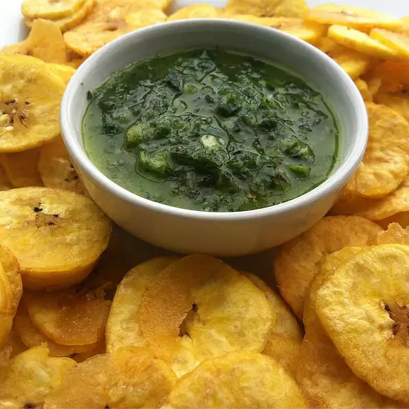

Bannana Chips

Description
Platanos, or Green Plantain Chips, are a yummy treat from the Caribbean.
Per Serving: 103 calories; protein 0.6g; carbohydrates 14.3g; fat 5.7g; sodium 1.8mg. Full Nutrition
Ingredients
- Vegetable oil, for deep-frying
- 2 green plantains, peeled and sliced 1/8-inch thick
- salt to taste
Steps
- Heat oil in deep-fryer to 375 degrees F (190 degrees C).
- Deep fry the plantain slices, about a dozen at a time, until golden brown on both sides, 3 to 4 minutes.
- Drain in a large bowl lined with paper towels, and salt to taste while still warm.